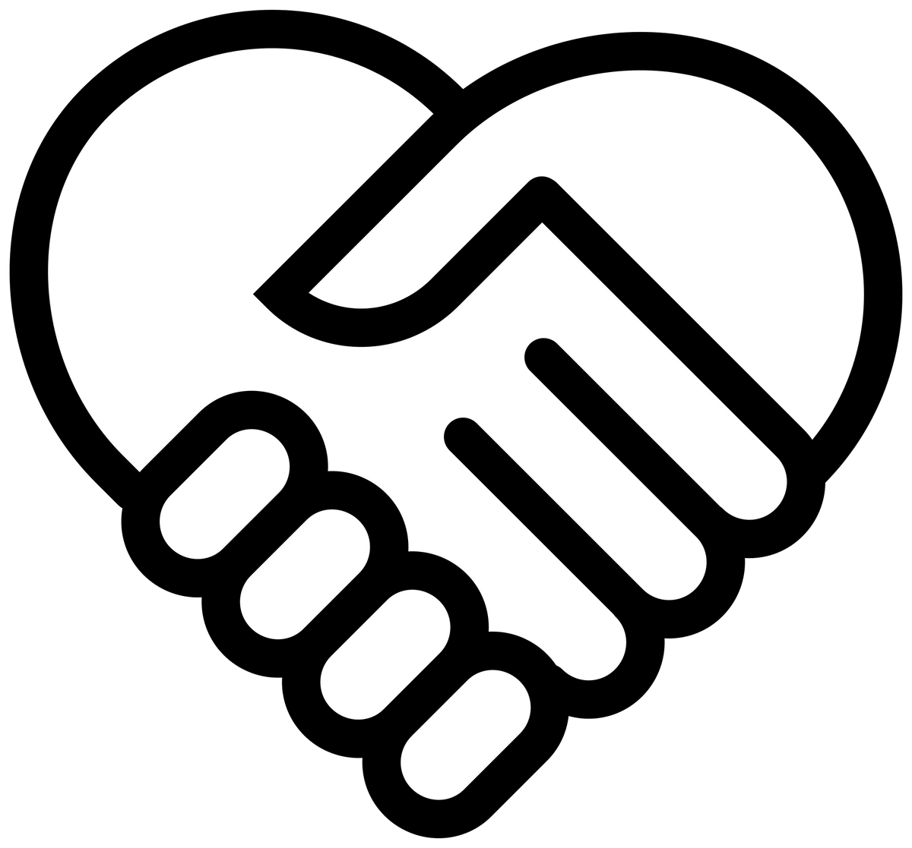

Over ons
Wie zijn wij
Jongeren democraten is een nieuwe partij warbij alles draait om gelijkheid. Samen met iedereen willen we Nederland en nog positievere toekomst geven.
Dit kan namelijk alleen samen met iedereen omdat er nog een aantal problemen in Nederland zijn die we met iedereen moeten oplossen.
Alleen samen kunnen we vooruit!
Onze leden:
Charlotte de Jongh
Lisa Beijer
Mansur Shuduyev
Gina Ackerstaf
Sen Schoondermark>